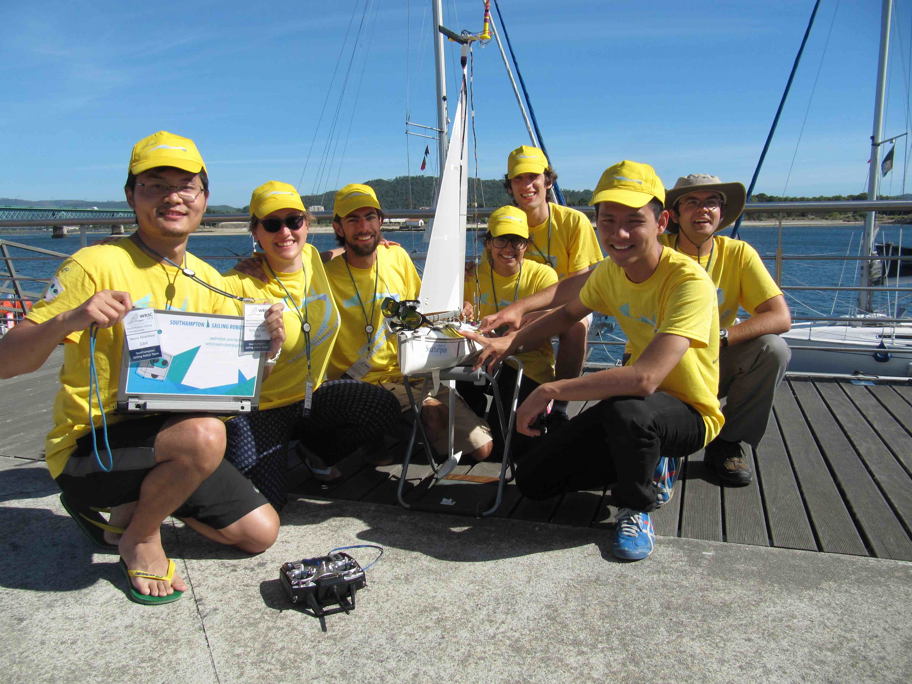
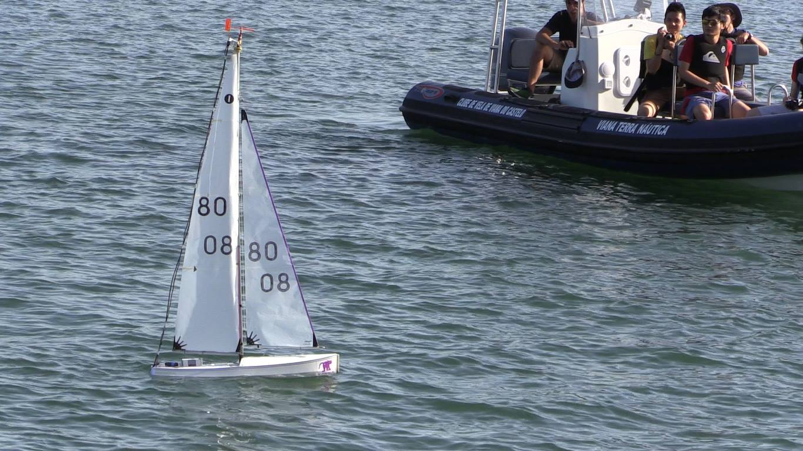

|
Autonomous Sailing Robot Project
Sailing boat is powered by wind energy, it's sustainable and low-cost feature make it becoming an promising platform for many activities like long term oceanographical survey.
In Jan, 2016, we started this student lead project with ultimate goal in building a open-source sailing robot system that freely available to the public.
To reach our goal and also learn from others, we form a student competition team for the World Robotics Sailing Competition (WRSC). This competition is inspired by Mark Neal's Microtransat challenge – build an autonomous sailing boat to transatlantic.
Challenges
|
 |
We have four tasks in 2016 editions’ World Robotics Sailing Competition. First challenge is fleet race that each boat shall pass four buoys and finish one lap. Team use less time get higher scores. Next mission is station keeping, boat should able to keep as close to a given way point as possible. Final marks are given by the 95% quantile distance to the way point in 5 minutes. Area searching is the third mission, an “L” shape area was divided into 27 smaller blocks, and sailboat need search as much blocks as possible. Last task is obstacle avoidance, sail boat need to sail in an rectangular area back and forth. Once it detect a red buoy boat need turn around the obstacle and back on track once leave obstacle area.
|
Our boat
|
 |
Thanks to Prof.Lester in our University, we got a second hand International One Meter race boat as our hardware platform (We got countless spare parts and other stuff from Lester. Without his generous support all of those couldn't be true). We fit electronics like Raspberry Pi, GPS, Inertia Measurement Unit into this boat.
As IOM class boat is a fairly robust in design, we put most of effort on electronics and software system. We developed a simple way point based navigation and control system on the boat. For each tasks, we generated series of way points to achieved more complicated higher level behavior. You can find code for this open source project at GitHub.
With good preparation and bit lucky we are the champion of 2016 World Robotics Sailing Competition in micro sailing boat group.
|
Join 2017 team
I will be the team leader of 2017 team. And we are looking for highly self-motivate students in ship science, electronics and computer science, accounting, fine arts, Spanish, and whatever join our team. We are a fully internationalize team that you would have fantastic experience that working with people who is as smart as you.
Get in touch with us by email sotonsailrobot@gmail.com. Or fire us an issue on GitHub.
|